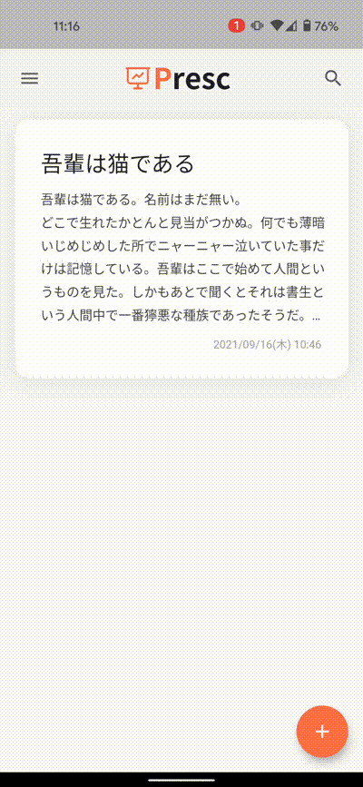
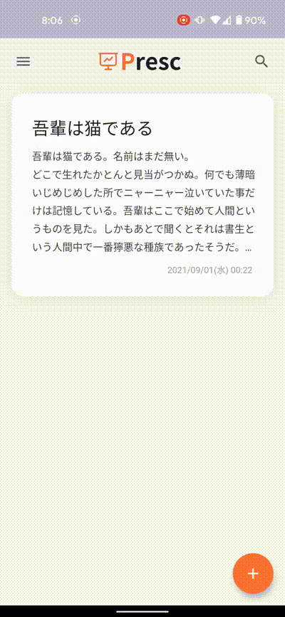
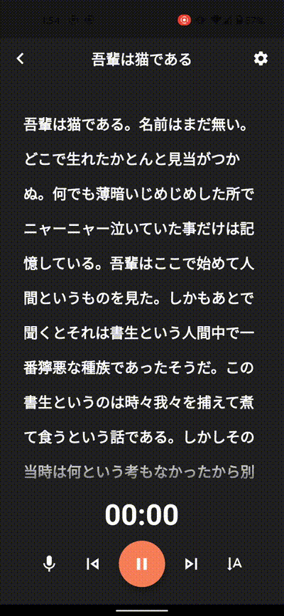
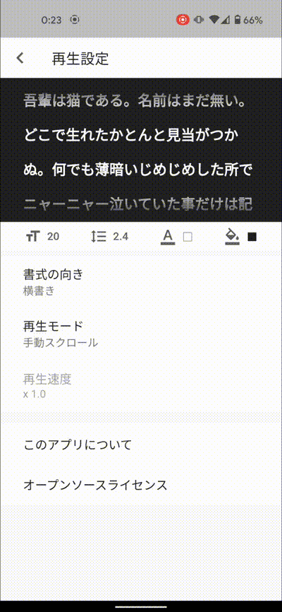
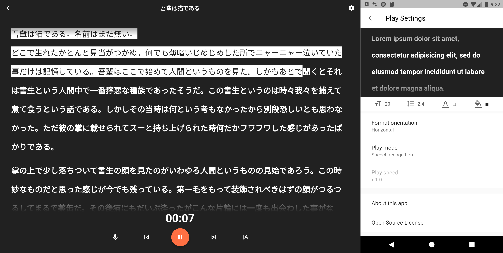

音声認識により、どこまで読んだかが分かるプレゼンテーション用原稿表示アプリ
Presc
- Android / iOS
- Flutter
- Dart
- アプリ甲子園
スマホに表示した原稿を、話した分だけ自動でスクロールしてくれる「プレゼンテーション用原稿表示アプリ」です。
話し手の音声をアプリが自動認識してくれ、どこまで読んだかが一目で分かります。
人前で話すことになって、プレゼン原稿を用意したのに、緊張で頭が真っ白になり「どこまで読んだっけ？」「次はどこを読むんだっけ？」と迷子になる事を防いでくれます。
再生画面では、音声認識により原稿を自動でスクロールしてくれ、どこまで読んだかが一目で分かります。
また、書式の向き（縦書き、横書き）や文字の色、フォントサイズなどは自由にカスタマイズ可能です。
編集画面は基本的なメモ帳の機能（追加・編集・検索・削除）を行うことができ、即座に原稿を修正することができます。
また、作った原稿はタグを付けて整理することができるため、たくさんの原稿の中からすぐに探し出せます。




また、言語は日本語と英語に対応しており、タブレットサイズにも対応しています。

コンテスト
学校の課題研究制作と同時に、アプリ甲子園2021に応募しました。
アプリ甲子園では
- 一次選考（書類審査）
- 二次選考（プレゼンテーション）
を通過して、上位10組の決勝大会に進出しました。
アプリ甲子園とは
「アプリ甲子園」は、次世代を担う若手クリエーターの発掘と健全な育成支援を目的として、
2011年より開催しているスマートフォン向けアプリ開発コンテストです。
過去の応募総数は1,300作品を超えており、『企画力×技術力』をもとに最優秀作品が決定されます。
https://applikoshien.jp/
最終的に「総合順位3位」＆「技術賞」を獲得する事が出来ました。
▼入賞作品の紹介記事
https://prtimes.jp/main/html/rd/p/000000124.000019771.html
▼発表アーカイブ
リンク
使用技術
- 言語・・・Dart
- フレームワーク・・・Flutter
- 主要ライブラリ・・・speech_to_text（音声認識）, provider（MVVMフレームワーク）, sqflite（データベース）
- ツール・・・Git, Adobe XD, DeployGate, Android Studio
- OS・・・Windows
制作期間